Last updated: 2021-07-15
Checks: 6 1
Knit directory: KCM_ULB_Analysis/
This reproducible R Markdown analysis was created with workflowr (version 1.6.2). The Checks tab describes the reproducibility checks that were applied when the results were created. The Past versions tab lists the development history.
The R Markdown file has unstaged changes. To know which version of the R Markdown file created these results, you’ll want to first commit it to the Git repo. If you’re still working on the analysis, you can ignore this warning. When you’re finished, you can run wflow_publish to commit the R Markdown file and build the HTML.
Great job! The global environment was empty. Objects defined in the global environment can affect the analysis in your R Markdown file in unknown ways. For reproduciblity it’s best to always run the code in an empty environment.
The command set.seed(20210318) was run prior to running the code in the R Markdown file. Setting a seed ensures that any results that rely on randomness, e.g. subsampling or permutations, are reproducible.
Great job! Recording the operating system, R version, and package versions is critical for reproducibility.
Nice! There were no cached chunks for this analysis, so you can be confident that you successfully produced the results during this run.
Great job! Using relative paths to the files within your workflowr project makes it easier to run your code on other machines.
Great! You are using Git for version control. Tracking code development and connecting the code version to the results is critical for reproducibility.
The results in this page were generated with repository version 5954f10. See the Past versions tab to see a history of the changes made to the R Markdown and HTML files.
Note that you need to be careful to ensure that all relevant files for the analysis have been committed to Git prior to generating the results (you can use wflow_publish or wflow_git_commit). workflowr only checks the R Markdown file, but you know if there are other scripts or data files that it depends on. Below is the status of the Git repository when the results were generated:
Ignored files:
Ignored: .Rhistory
Ignored: .Rproj.user/
Ignored: analysis/1805.html
Ignored: code/.Rhistory
Untracked files:
Untracked: 1805.html
Untracked: analysis/combined_cost_analysis_20210513.Rmd
Untracked: analysis/combined_cost_analysis_20210517.Rmd
Untracked: analysis/combined_cost_analysis_2021057.Rmd
Untracked: dashboard/
Unstaged changes:
Modified: analysis/combined_cost_analysis_20210503.Rmd
Modified: analysis/index.Rmd
Modified: analysis/ulb_analysis.Rmd
Modified: code/zz_emptyScriptTemplate_CODE.R
Modified: code/zz_localG.R
Note that any generated files, e.g. HTML, png, CSS, etc., are not included in this status report because it is ok for generated content to have uncommitted changes.
These are the previous versions of the repository in which changes were made to the R Markdown (analysis/ulb_analysis.Rmd) and HTML (docs/ulb_analysis.html) files. If you’ve configured a remote Git repository (see ?wflow_git_remote), click on the hyperlinks in the table below to view the files as they were in that past version.
| File | Version | Author | Date | Message |
|---|---|---|---|---|
| html | 0c04c11 | michaelgaunt404 | 2021-05-05 | added addtional total cost analysis |
| Rmd | 7c52f5c | michaelgaunt404 | 2021-04-26 | wflow_git_commit(all = T) |
| html | 7c52f5c | michaelgaunt404 | 2021-04-26 | wflow_git_commit(all = T) |
| html | 7bc3cbb | michaelgaunt404 | 2021-04-13 | Build site. |
| Rmd | 6021c91 | michaelgaunt404 | 2021-04-13 | Publish the initial files for myproject |
This analysis was not able to determine a meaningful relationship between operational cost (total maintenance cost given miles driven per month) of a KCM vehicle’s. In particular, this analysis was not able to develop an answer to the question: is there a clear point in a vehicle’s operation when it becomes too financially burdensome to maintain?
The data uses for this analysis was provided for by KCM. The data was cleaned and aggregated for the purposes of this analysis. Through initial exploratory data analysis, the data was found to be populated with dubious maintenance costs and vehicle meter data (very large costs values or meters values less than the previous month reading) - potentially caused during the data input process. The time series nature of the data and reliance upon previous month values is sensitive to errors like this and efforts were taken to remove data that seemed spurious.
The data used for this analysis in its final form can be seen below:
This section provides an overview of the analysis that was carried out. A number of plots have been provided to provide insight as to why a link was not able to be found between maintenance cost given the age or mileage of a vehicle.
The two plots below (tabbed) depict maintenance costs for vehicles by age and meter. Both plots are series box plot graphs which detail the distribution of monthly maintenance cost/miles driven ratio (MMMR) given age/meter bins, respectively. Each depict the an increase of MMMR in the early age/meter range and a plateauing of this value. These plots are more or less the same as age and vehicle mileage meter are highly correlated. The age plot does deviate from the meter plot by demonstrating an increase in variance and instability of MMMR values - this is likely due to a smaller number of vehicles in the higher age range thus being more sustainable to the influence of a few extreme values.
It is important to highlight what is not seen in either of these plots: an upward increase in MMMR in the later stages of a vehicles operation. Intuitively, an older vehicle may undergo more or more expensive maintenance events resulting in an increase in MMMR. This behavior would be expected to look like hockey stick - a flat trend follows by an inflection point where the MMMR would steadily increase (or potentially a step increase) - but this is not the case.
Note: The red dot is the mean value of MMMR per bin while the flat bar in the box indicates the MMMR median per bin.
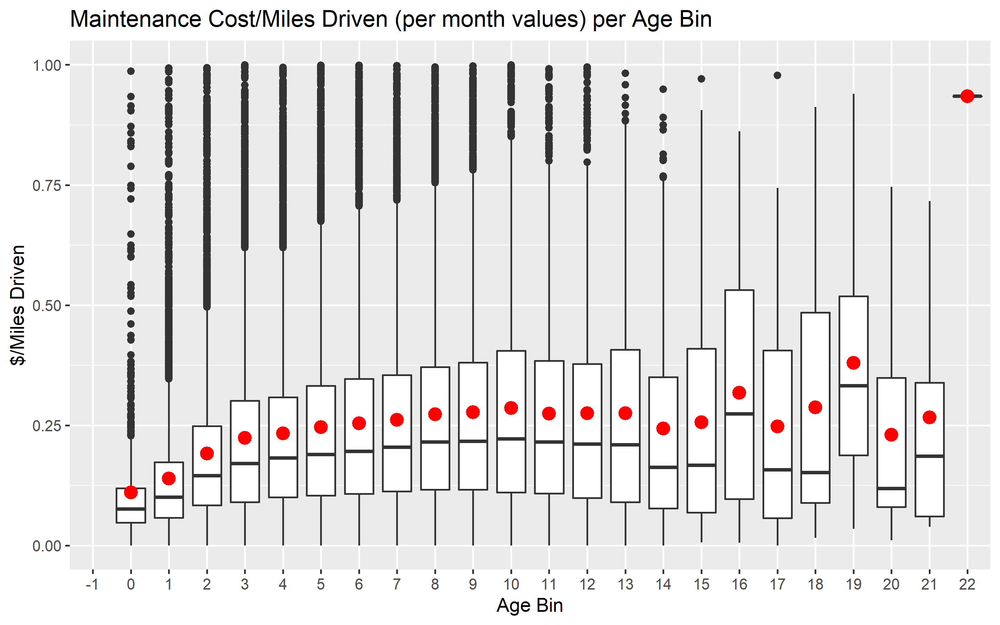
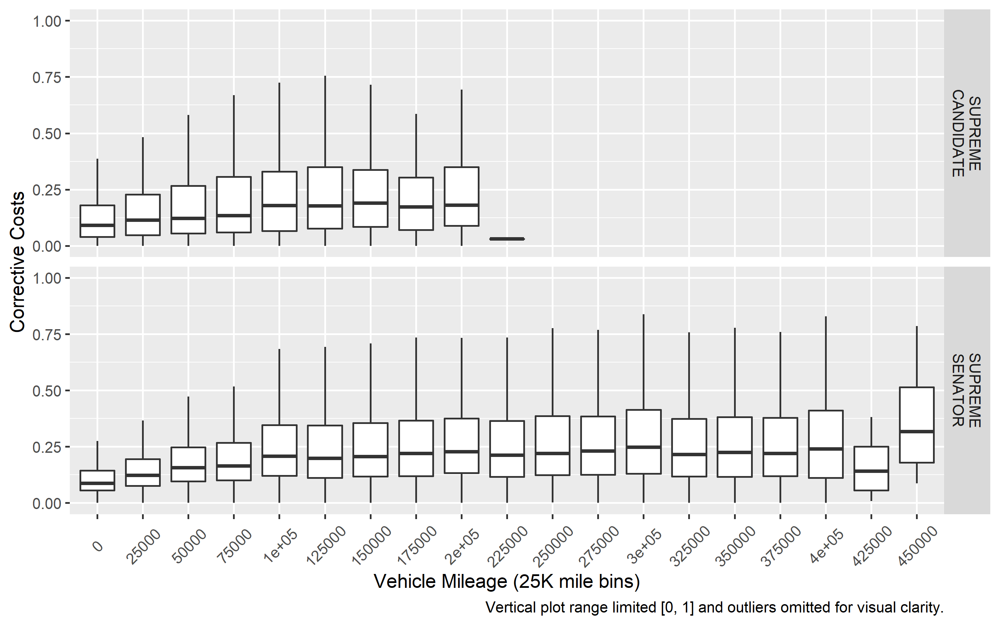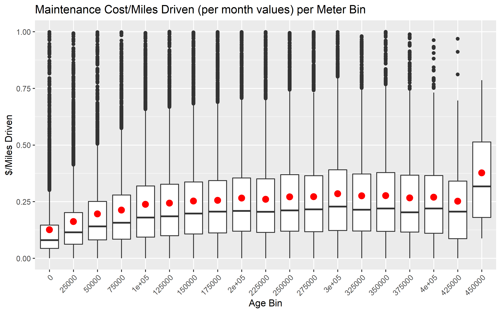
The plots above were broken out by mcc/make/model in order to investigate potential hidden MMMR trends saturated by the aggregation of all vehicles into a single plot. The plots below are all density ridge plots depicting the distribution of MMMR values per meter bin for different vehicle attributes - mcc status, manufacturer, model, and make of the vehicle.
All of these plots show similar behavior as the plots above - no large increase in MMMR in the later operational usage ranges. There is no definitive inflection point that marks an increase in operational cost; at best, some plots depict a slight, constant upward drift of MMMR but this alone does not provide clear indication as to when a vehicle becomes financially burdensome.
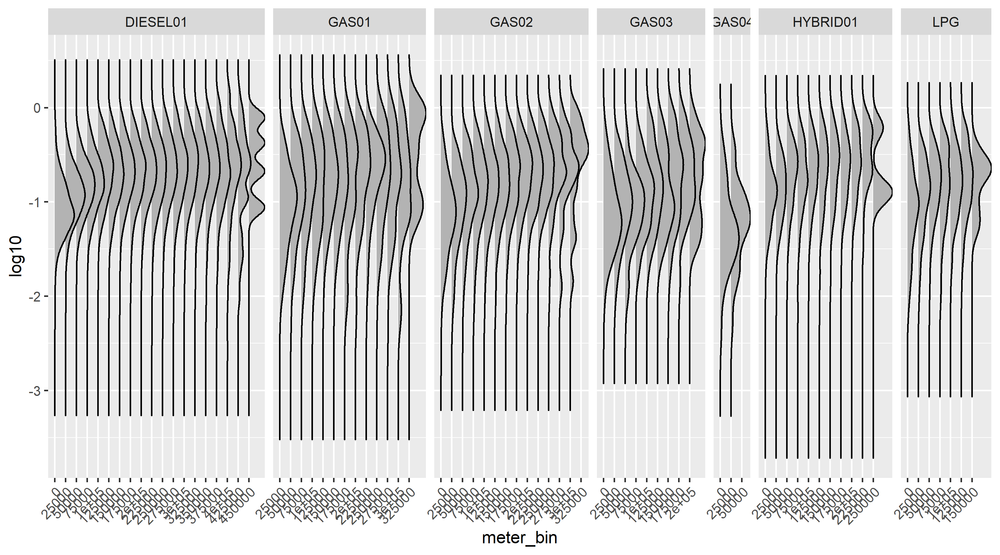
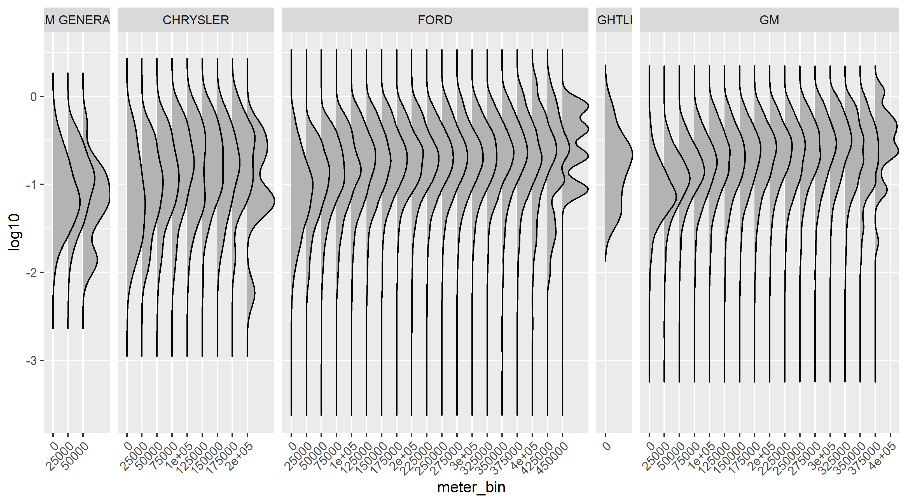
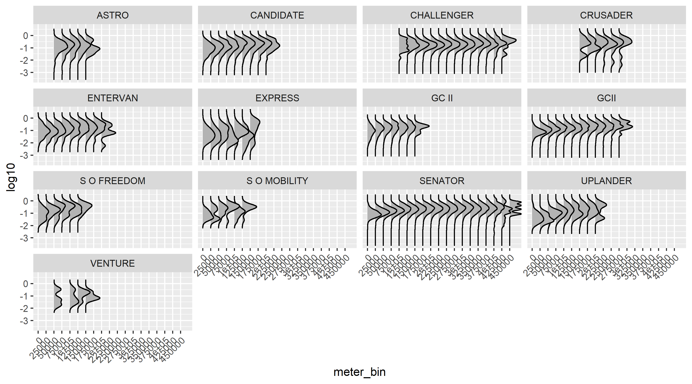
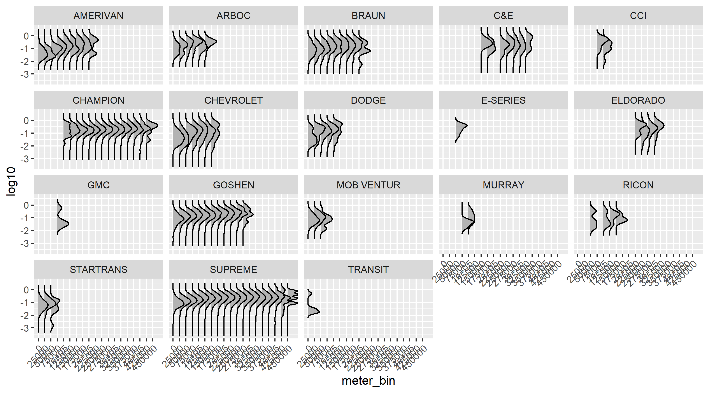
The plots below depicts the extreme skewness of total monthly vehicle maintenance costs. Both plots are kernel density plots that depict the distribution of cost events as defined by $1000 increments. The first plot depicts the data as it appears naturally, the second has a log adjustment applied to the x axis.
Both plots indicate an there are a few extreme cost events prevalent in the data, the second plot shows a normal distribution of costs that is centered ~$1000 - with the bulk of maintenance costs being lower than that.
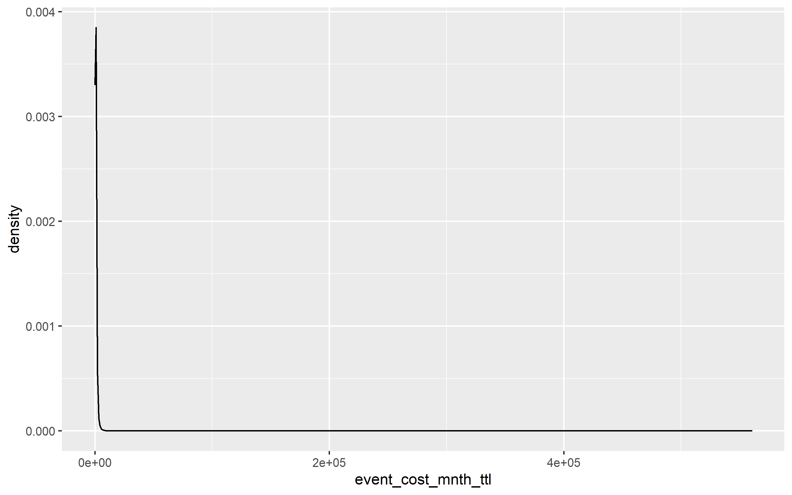
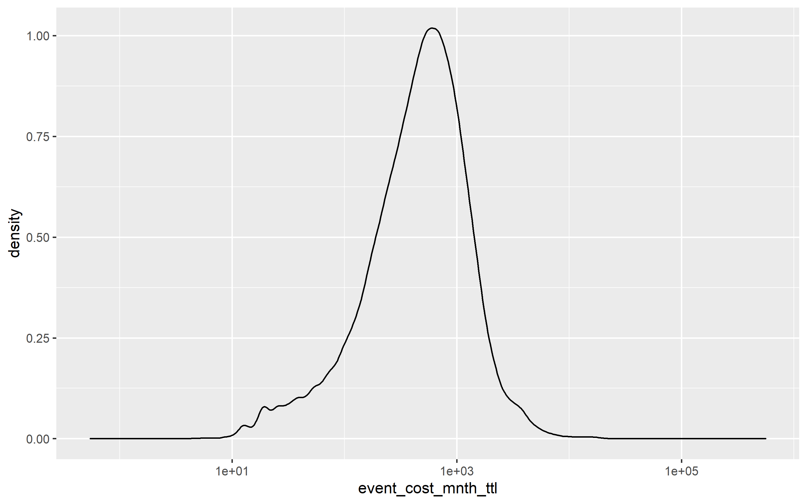
This is relevant in determining if the frequency of expensive maintenance events and if there is an increase in said events given the and older operational age (age/meter) of a vehicle. The total monthly maintenance cost for each vehicle was binned into $1000 groupings and the number of these particular groupings were counted given the meter of the vehicle. The plot below depicts the number of maintenance event occurrences (binned by 000’s of dollars) given the meter vehicle bin - the y scale has been logged scaled.
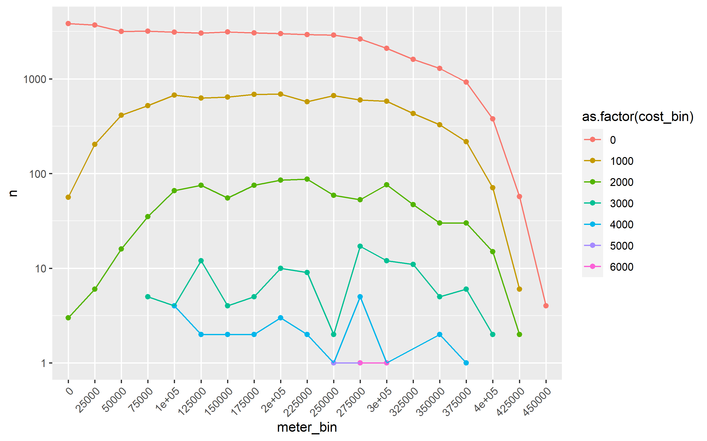
The above plot restates the assertions made above:
Again, there is no drastic increase in the number of maintenance events at any cost level and no indication of a point at which a vehicle should be reliably removed from the fleet given the operational costs.
For the sake of completeness, the below plot shows occurrences of maintenance events per meter given the highest mileage vehicle types in the data. each vehicle plot shows roughly the same behavior as the aggregated plot above with a few notable exceptions:
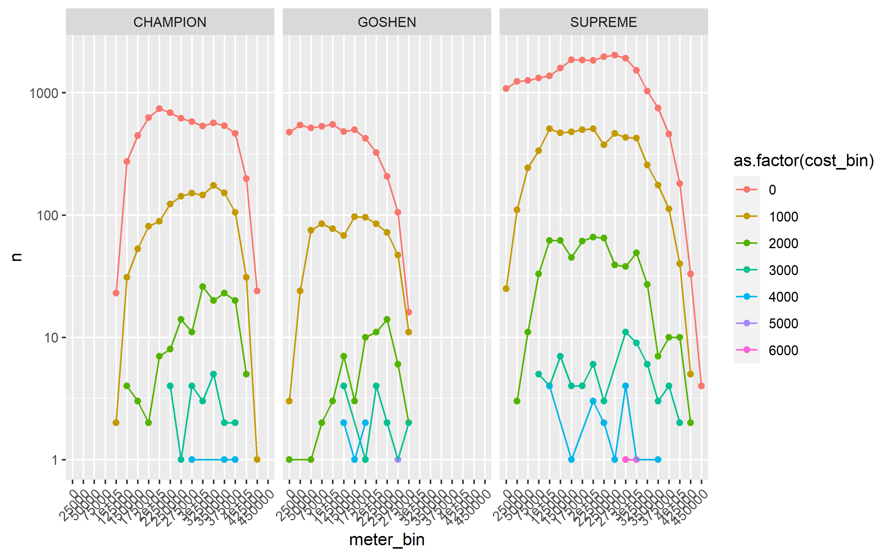
R version 4.1.0 (2021-05-18)
Platform: x86_64-w64-mingw32/x64 (64-bit)
Running under: Windows 10 x64 (build 17134)
Matrix products: default
locale:
[1] LC_COLLATE=English_United States.1252
[2] LC_CTYPE=English_United States.1252
[3] LC_MONETARY=English_United States.1252
[4] LC_NUMERIC=C
[5] LC_TIME=English_United States.1252
attached base packages:
[1] stats graphics grDevices utils datasets methods base
other attached packages:
[1] scales_1.1.1 ggridges_0.5.3 here_1.0.1
[4] data.validator_0.1.5 skimr_2.1.3 DT_0.18
[7] lubridate_1.7.10 data.table_1.14.0 janitor_2.1.0
[10] readxl_1.3.1 magrittr_2.0.1 forcats_0.5.1
[13] stringr_1.4.0 dplyr_1.0.7 purrr_0.3.4
[16] readr_1.4.0 tidyr_1.1.3 tibble_3.1.2
[19] ggplot2_3.3.5 tidyverse_1.3.1 workflowr_1.6.2
loaded via a namespace (and not attached):
[1] httr_1.4.2 sass_0.4.0 jsonlite_1.7.2 modelr_0.1.8
[5] bslib_0.2.5.1 assertthat_0.2.1 highr_0.9 cellranger_1.1.0
[9] yaml_2.2.1 pillar_1.6.1 backports_1.2.1 glue_1.4.2
[13] digest_0.6.27 promises_1.2.0.1 rvest_1.0.0 snakecase_0.11.0
[17] colorspace_2.0-2 htmltools_0.5.1.1 httpuv_1.6.1 plyr_1.8.6
[21] pkgconfig_2.0.3 broom_0.7.8 haven_2.4.1 whisker_0.4
[25] later_1.2.0 git2r_0.28.0 generics_0.1.0 farver_2.1.0
[29] ellipsis_0.3.2 withr_2.4.2 repr_1.1.3 cli_3.0.0
[33] crayon_1.4.1 evaluate_0.14 fs_1.5.0 fansi_0.5.0
[37] xml2_1.3.2 tools_4.1.0 hms_1.1.0 lifecycle_1.0.0
[41] munsell_0.5.0 reprex_2.0.0 compiler_4.1.0 jquerylib_0.1.4
[45] rlang_0.4.11 grid_4.1.0 rstudioapi_0.13 htmlwidgets_1.5.3
[49] crosstalk_1.1.1 base64enc_0.1-3 labeling_0.4.2 rmarkdown_2.9
[53] gtable_0.3.0 DBI_1.1.1 R6_2.5.0 knitr_1.33
[57] utf8_1.2.1 rprojroot_2.0.2 stringi_1.6.2 Rcpp_1.0.6
[61] vctrs_0.3.8 dbplyr_2.1.1 tidyselect_1.1.1 xfun_0.24